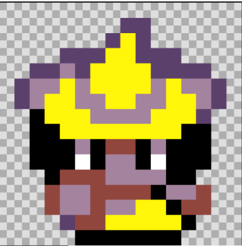
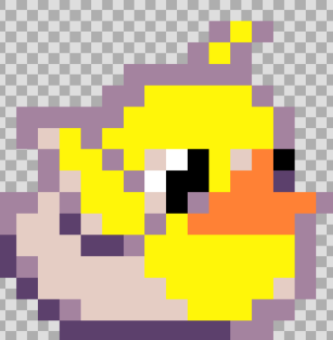
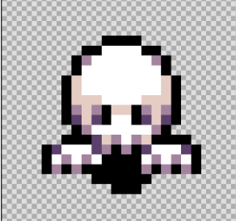
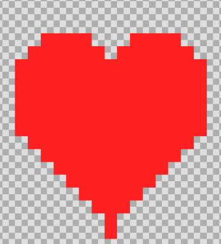
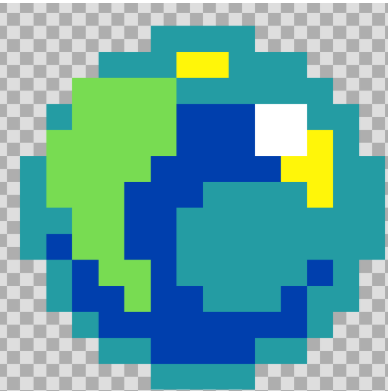
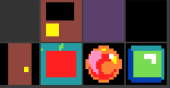

Hau nire magoa da, jokoan erabiliko duzun lehenengo pertsonaia izango da.

Hau bigarren jokalaria da, bigarren mapa agertuko da eta jokoa irabazteko ere balio du tipo player da.

Hau nire mamua da, etsaia motakoa eta hauek hiltzen dute, tipo enemy da.

Hau da nire bihotza, bizitzak gehitzeko balio du, nik sortutakoa tipoa da.

Hau nire projektile da, mamuak hiltzeko balio duena, projectile tipoa da.

Hau nire diseinuak dira, mapetan erabilitakoak. Ateak beste mapetara eta irabazteko balio dute, sagarra janaria da, su bola bizitza kentzen dizu eta bola berdea baita ere janaria da.